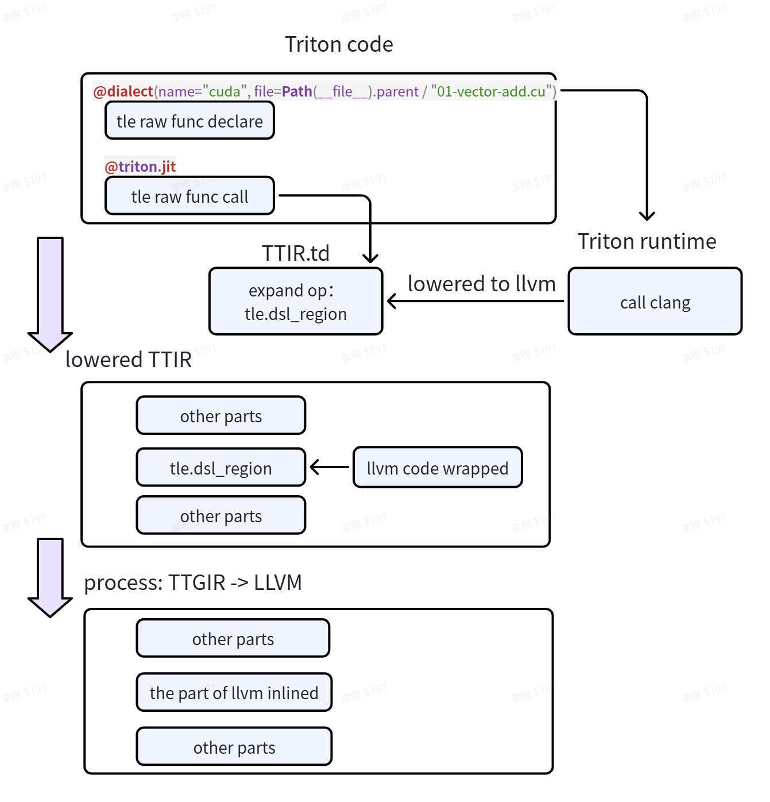
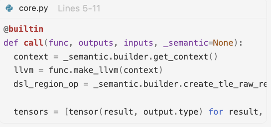

Use TLE-Raw#
This section introduces how to use TLE-Raw. TLE-Raw is available on trition_3.6.x branch.
TLE Raw provides a low-level extension interface for Triton, allowing users to fill capability gaps and gain fine-grained control via third-party dialects and languages (for example, using CUDA for thread-level scheduling, synchronization, and memory access). Users can choose between portability and composable optimization (via MLIR dialect integration) and maximum fine-grained control (via CUDA integration) based on the target hardware and toolchain maturity.
Integrate MLIR dialect into LLVM for portability and composable optimization#
The following is an example of MLIR (Multi-Level Intermediate Representation).
from typing_extensions import Literal as L
from mlir import ir
from mlir.dialects import arith, llvm, nvvm, scf
import torch
import triton
import triton.language as tl
from triton.experimental.tle.raw import dialect, Input
import triton.experimental.tle.language.raw as tle_raw
DEVICE = triton.runtime.driver.active.get_active_torch_device()
@dialect(name="mlir")
def vector_add_tile(
output: Input[L["!llvm.ptr<1>"]],
x: Input[L["!llvm.ptr<1>"]],
y: Input[L["!llvm.ptr<1>"]],
n_elements: Input[L["i32"]],
):
tidx = nvvm.read_ptx_sreg_tid_x(ir.IntegerType.get_signless(32))
bdimx = nvvm.read_ptx_sreg_ntid_x(ir.IntegerType.get_signless(32))
gdimx = nvvm.read_ptx_sreg_nctaid_x(ir.IntegerType.get_signless(32))
bidx = nvvm.read_ptx_sreg_ctaid_x(ir.IntegerType.get_signless(32))
tidx = arith.index_cast(ir.IndexType.get(), tidx)
bdimx = arith.index_cast(ir.IndexType.get(), bdimx)
gdimx = arith.index_cast(ir.IndexType.get(), gdimx)
bidx = arith.index_cast(ir.IndexType.get(), bidx)
idx = arith.addi(arith.muli(bidx, bdimx), tidx)
step = arith.muli(bdimx, gdimx)
n_elements = arith.index_cast(ir.IndexType.get(), n_elements)
for i in scf.for_(idx, n_elements, step):
i = arith.index_cast(ir.IntegerType.get_signless(32), i)
ptrty = ir.Type.parse("!llvm.ptr<1>")
f32ty = ir.Type.parse("f32")
xptr = llvm.getelementptr(ptrty, x, [i], [-2147483648], f32ty, 0)
yptr = llvm.getelementptr(ptrty, y, [i], [-2147483648], f32ty, 0)
xval = llvm.load(f32ty, xptr)
yval = llvm.load(f32ty, yptr)
outval = arith.addf(xval, yval)
outptr = llvm.getelementptr(ptrty, output, [i], [-2147483648], f32ty, 0)
llvm.store(outval, outptr)
scf.yield_([])
@triton.jit
def add_kernel(
x_ptr,
y_ptr,
output_ptr,
n_elements,
BLOCK_SIZE: tl.constexpr,
):
tle_raw.call(vector_add_tile, [output_ptr, x_ptr, y_ptr, n_elements])
def add(x: torch.Tensor, y: torch.Tensor):
output = torch.empty_like(x)
assert x.device == DEVICE and y.device == DEVICE and output.device == DEVICE
n_elements = output.numel()
grid = lambda meta: (triton.cdiv(n_elements, meta["BLOCK_SIZE"]), )
add_kernel[grid](x, y, output, n_elements, BLOCK_SIZE=1024)
return output
if __name__ == "__main__":
x = torch.randn(2048, device=DEVICE)
y = torch.randn(2048, device=DEVICE)
z = add(x, y)
assert torch.allclose(x + y, z), (x + y, z)
TLE-raw consists of the following parts:
Dialect declaration (decorator)
Decorator: @tle.raw.language(name=“mlir”)
Explanation: This decorator marks the function vector_add_tile as a block of code written directly in the MLIR dialect. It tells the compiler, specifically through the FlagTree EDSL (Embedded Domain Specific Language), that the body of this function should be interpreted and lowered using MLIR operations (such as nvvm, arith, and tensor), rather than standard Python or Triton operations.
Function implementation
Function: vector_add_tile(…)
Explanation: This is the actual implementation of the computation kernel written using low-level MLIR Python bindings. It defines the specific operations (thread indexing, memory loading, floating-point addition, and memory storing) that will be executed by the hardware.
Function call
Invocation: tle_raw.call(vector_add_tile, args=[x, y, output])
Explanation: This line invokes the declared MLIR function (vector_add_tile) from within the high-level Triton kernel (add_kernel). It passes the input tensors x, y, and the output buffer. Crucially, it provides hardware mapping hints (defining the number of threads) and memory layout specifications (defining the tensors as residing in “shared” memory with a specific order). This allows the compiler to bridge the gap between the high-level tl.load/tl.store operations and the low-level MLIR IR generation.
Integrate CUDA into LLVM for maximum fine-grained control#
This section only covers how to integrate CUDA kernel into LLVM inline path. Integrating other vendors into LLVM inline path can follow similar steps.
TLE-Raw supports CUDA kernel integration via the LLVM inline path. Vendors integrating TLE-Raw on the CUDA side should evaluate:
Whether clang can generate LLVM IR and serialize it as text
Whether TTGIR-related pass operations can be reused or adapted
LLVM route#
Basic flow: use clang to translate CUDA code into LLVM IR, then apply the existing LLVM inline pass.

Usage example#
Reference:
python/tutorials/tle/raw/cuda/01-vector-add.pyTriton side: provide the CUDA file path and function declaration. Other vendors could register your own language name as the value of the
nameparameter.
CUDA side: implement the CUDA kernel. LLVM struct parameter declarations are still retained (because subsequent inlining requires handling the Triton ptr-to-LLVM conversion, which is currently left to the user for one-to-one mapping). Other vendors should customize the mapping based on your own language.

Processing flow#
Frontend: CUDA-LLVM integration into Triton frontend and runtime#
Step |
Module |
Key Pass Development |
|---|---|---|
Dialect registration entry (dialect decorator) |
|
- Maintains |
TTIR extension: |
|
- Accepts Triton parameters; |
CUDA runtime: where clang is actually invoked |
|
- |

Middle-End: Python to C++, MLIR pass relationship and pass inheritance#
Step |
Module |
Key Pass Development |
|---|---|---|
Attach LLVM function to |
|
-  |
C++ bridge: IR injection and type bridging |
|
- |
Backend: CUDA-LLVM IR conversion — parameter handling and Triton/TLE-Raw data bridging#
Step |
Module |
Key Pass Development |
|---|---|---|
Backend pass registration |
|
- |
Parameter bridging |
|
- Converts tensor parameters/results in |
LLVM inline preparation |
|
- Inlines |

Semantic object mapping#
Semantic Object |
Triton Side |
TLE-Raw Side |
LLVM Side |
|---|---|---|---|
Scalar parameter |
|
Directly as |
LLVM scalar parameter |
Pointer parameter |
|
Passed directly or extracted as LLVM ptr |
|
Tensor input |
|
Converted to |
Expanded to allocated/aligned/offset/sizes/strides |
Tensor output |
|
|
LLVM struct or multi-return fields, then repacked |